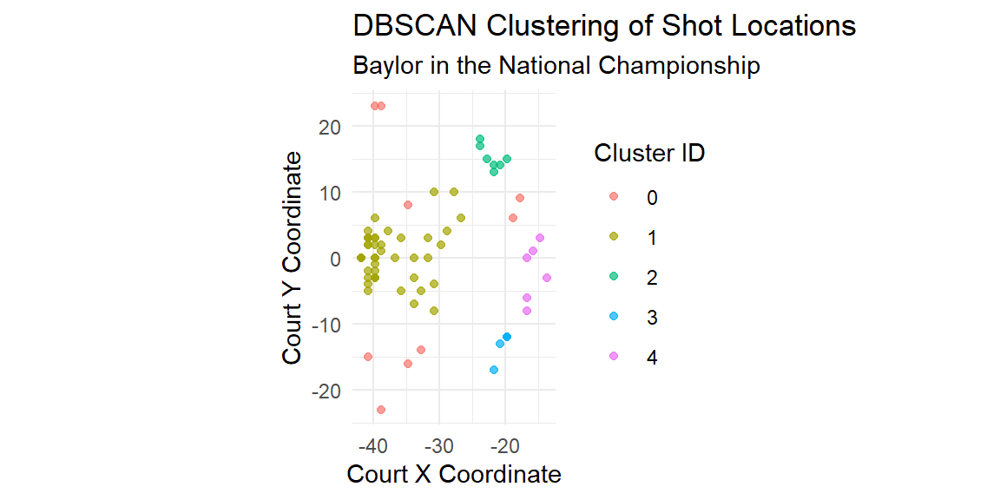
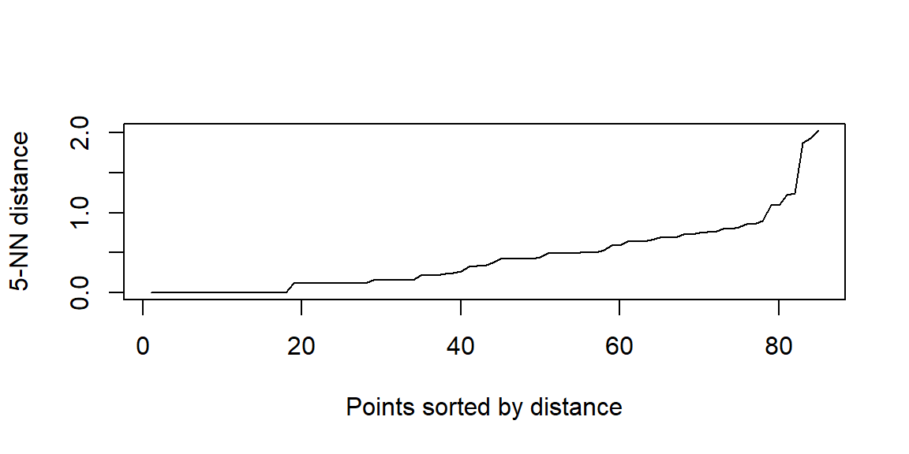
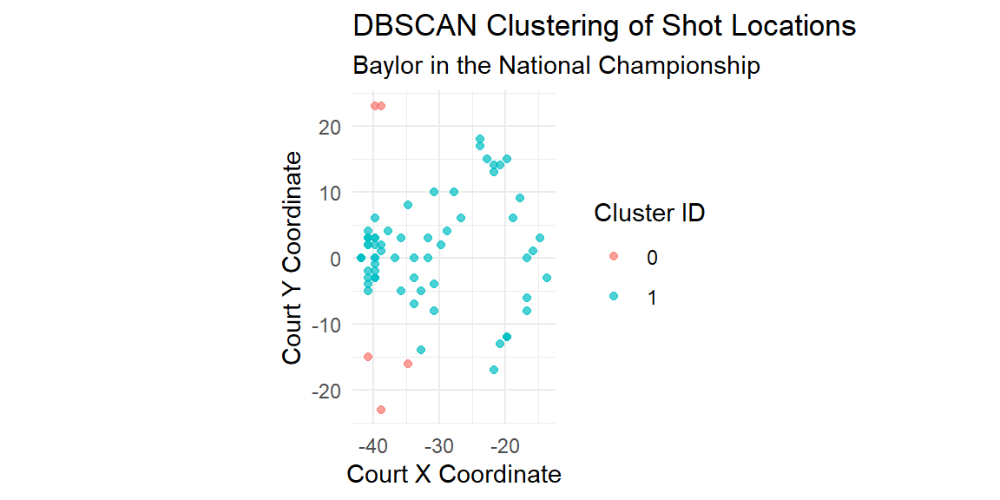
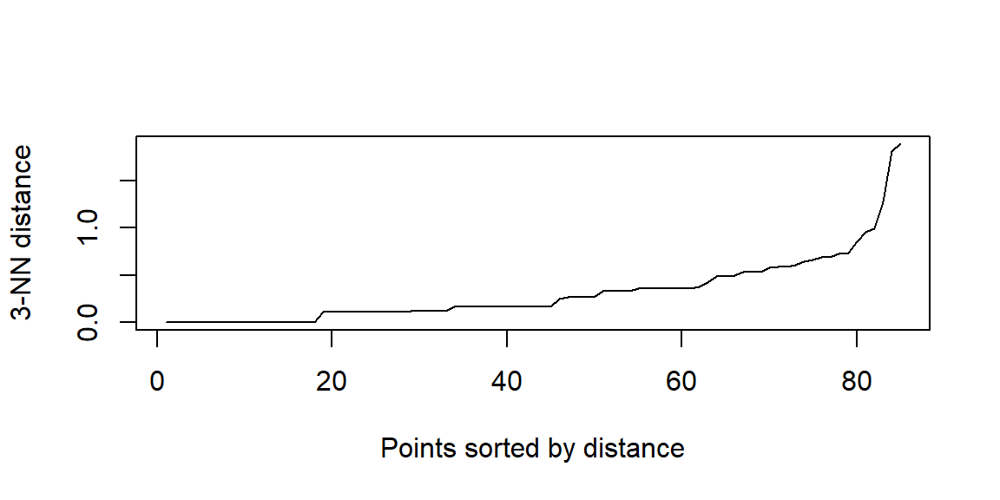
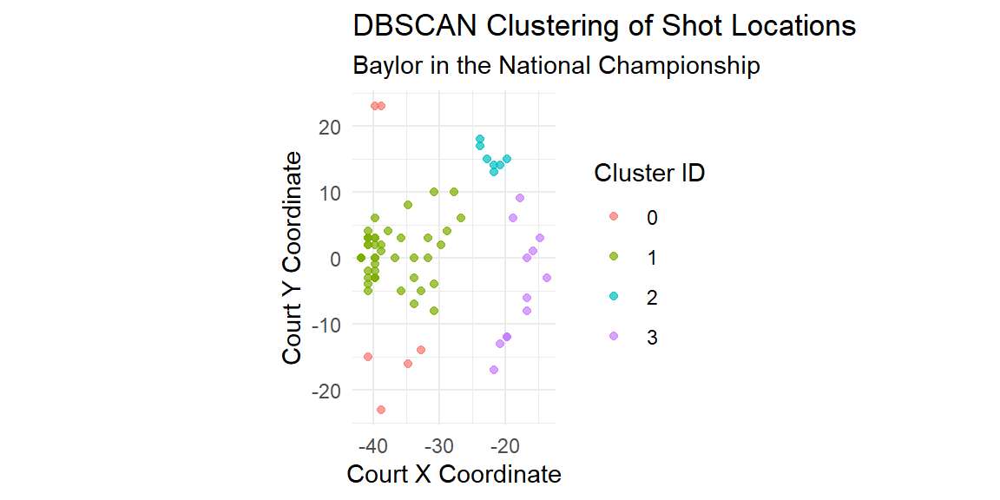

16 DBSCAN
“Mike Tyson is a good boxer, but he is not the best fighter. I am the best fighter.” - Royce Gracie
In sports analytics, understanding underlying patterns within data can offer valuable insights into player behavior, team strategies, and overall game dynamics. Clustering techniques are commonly utilized for this purpose, grouping similar observations without pre-specified categories or labels. Among the variety of clustering methods, Density-Based Spatial Clustering of Applications with Noise (DBSCAN) has gained considerable popularity due to its ability to uncover meaningful patterns while robustly handling noise and outliers. Unlike traditional clustering methods, DBSCAN identifies clusters based on the density of data points, making it particularly suitable for datasets where clusters are irregularly shaped or densities vary significantly.
16.1 Understanding DBSCAN
DBSCAN, which stands for Density-Based Spatial Clustering of Applications with Noise, is a powerful unsupervised learning algorithm particularly well-suited for clustering tasks involving complex geometries or datasets with noise. Unlike k-means or hierarchical clustering, DBSCAN does not require the analyst to specify the number of clusters ahead of time. Instead, it discovers clusters based on the density of data points in the feature space.
The key idea behind DBSCAN is that a cluster is a region of the space where data points are densely packed together, and separated from other clusters by areas of low density. To formalize this notion of density, DBSCAN uses two main parameters: \(\epsilon\) (epsilon) and MinPts (minimum points).
16.1.1 The \(\epsilon\) Neighborhood
The \(\epsilon\) parameter defines the radius of the neighborhood around a data point. This radius is used to identify which other points are considered close enough to be neighbors. A small \(\epsilon\) value makes the neighborhood very strict, while a large \(\epsilon\) may cause distinct clusters to merge. Choosing \(\epsilon\) effectively determines the scale at which the algorithm views the structure of the data.
16.1.2 Core, Border, and Noise Points
Using the \(\epsilon\) neighborhood, DBSCAN classifies each data point into one of three categories:
Core points are points that have at least MinPts points (including themselves) within their \(\epsilon\)-radius. These points are considered to be in dense regions and thus serve as the seeds for building clusters.
Border points are points that have fewer than MinPts points within their \(\epsilon\)ε-radius but are within the \(\epsilon\)-radius of a core point. These points belong to the cluster of the core point but are not themselves dense enough to start a new cluster.
Noise points (also called outliers) are points that are neither core points nor border points. These are considered to be in low-density regions and are not assigned to any cluster.
16.1.3 Cluster Formation
The clustering process in DBSCAN begins by selecting an arbitrary point in the dataset. If this point is a core point (i.e., it has at least MinPts neighbors within \(\epsilon\)), a new cluster is started. All points that are density-reachable from the core point are added to this cluster. A point \(p\) is said to be directly density-reachable from a point \(q\) if it lies within the \(\epsilon\)-radius of \(q\), and \(q\) is a core point. Furthermore, a point \(p\) is density-reachable from \(q\) if there is a sequence of points \(p_1, p_2, ..., p_k\) where \(p_1 = q\), \(p_k = p\), and each \(p_{i+1}\) is directly density-reachable from \(p_i\).
This expansion process continues recursively until no more points can be added to the cluster. The algorithm then moves on to the next unvisited point and repeats the process. If a point is not density-reachable from any core point, it is labeled as noise.
16.1.4 Advantages of DBSCAN
DBSCAN possesses several important strengths that make it particularly appealing for sports analytics and other real-world applications:
Arbitrary-Shaped Clusters: Unlike k-means, which assumes spherical clusters due to the use of centroids, DBSCAN can find clusters of any shape as long as they are dense enough. This is especially useful in spatial datasets, such as shot charts or movement trajectories.
Outlier Detection: By design, DBSCAN identifies and labels noise points, which can be interpreted as outliers. In sports contexts, these may correspond to rare events or unusual plays, which might warrant special attention.
No Need to Specify k: Unlike k-means or Gaussian Mixture Models, DBSCAN does not require the number of clusters to be specified in advance. This allows it to adapt to the structure of the data more flexibly.
16.1.5 Challenges in Parameter Selection
Despite its advantages, DBSCAN is sensitive to the choice of \(\epsilon\) and MinPts. If \(\epsilon\) is too small, many points will be labeled as noise. If \(\epsilon\) is too large, distinct clusters may be merged together. Similarly, setting MinPts too low may lead to spurious clusters formed from noise, while setting it too high may prevent any clusters from forming.
A common strategy to select \(\epsilon\) is to plot the distances to the \(k\) nearest neighbors of each point (where \(k = MinPts - 1\)) and look for a sharp change, or “elbow,” in the plot. This helps to identify a threshold distance that distinguishes between dense and sparse regions of the data.
16.2 Practical Implementation Using Tidymodels and R
In R, the tidymodels framework provides intuitive tools to carry out DBSCAN clustering efficiently. For illustration, consider player shot location data from the hoopR package available on CRAN. We use DBSCAN to cluster shot locations, revealing preferred shooting zones and identifying unusual shot attempts.
First, ensure the required packages are installed and loaded:
Load a dataset of shot locations using the hoopR package. The following example fetches shot data for Baylor during the 2021 National Championship Game:
shots_data = espn_mbb_pbp(game_id = 401310865) |>
filter(shooting_play==TRUE) |>
filter(team_id==239) #239 is BaylorNext, we select only essential columns representing shot location coordinates:
shots_df = shots_data |>
select(coordinate_x, coordinate_y) 16.2.1 Conducting DBSCAN
In tidymodels, clustering workflows are straightforward. First, we define a recipe to preprocess data (here, scaling is beneficial as DBSCAN uses distance calculations):
shots_recipe = recipe(~ coordinate_x + coordinate_y, data = shots_df) |>
step_normalize(all_predictors()) |>
prep()
dat = shots_recipe |> bake(new_data = NULL)We then define the DBSCAN model, specifying the parameters \(\epsilon\) (eps) and MinPts (minPts). Initially, you may choose exploratory parameter values to understand their impact:
Extract cluster assignments from the fitted model:
shots_clustered = shots_df |>
mutate(cluster = fitted_model |> pluck("cluster"))
shots_clustered# A tibble: 85 × 3
coordinate_x coordinate_y cluster
<dbl> <dbl> <int>
1 -35.8 3 1
2 -36.8 0 1
3 -27.8 10 1
4 -26.8 6 1
5 -40.8 -2 1
6 -23.8 17 2
7 -39.8 2 1
8 -40.8 3 1
9 -39.8 6 1
10 -34.8 -16 0
# ℹ 75 more rowsThe resulting cluster variable identifies each shot’s cluster membership. Shots labeled as “0” correspond to noise.
16.2.2 Visualizing Results
Visualizing the clusters helps in interpreting results. The following plot clearly distinguishes clusters from noise, providing insights into preferred shooting locations and irregular attempts:
ggplot(shots_clustered, aes(x = coordinate_x, y = coordinate_y, color = factor(cluster))) +
geom_point(alpha = 0.7) +
coord_fixed() +
labs(title = "DBSCAN Clustering of Shot Locations",
subtitle = "Baylor in the National Championship",
x = "Court X Coordinate",
y = "Court Y Coordinate",
color = "Cluster ID") +
theme_minimal()
Interpreting the plot can reveal distinct shot zones, such as favored three-point shooting areas or mid-range positions. Shots identified as noise might represent uncommon attempts or last-second forced shots.
16.3 Parameter Tuning
Selecting optimal DBSCAN parameters (\(\epsilon\) and MinPts) is critical for meaningful clustering. Typically, exploratory analysis guides parameter choices. A common approach is using a k-nearest neighbor (k-NN) distance plot to choose an appropriate \(\epsilon\):
library(dbscan)
kNNdistplot(scale(shots_df), k = 5)
In the plot above, look for an elbow in the distance plot to inform an appropriate \(\epsilon\) value. Adjust eps and min_pts accordingly based on domain expertise and visualization results.
In our example, the elbow appears around 0.8 or 0.9. Let’s use \(\epsilon=0.85\). We will set minPts to the number of nearest neighbors we chose when we made the plot to determine \(\epsilon\) above.
fitted_model = dat |> dbscan(eps=0.85, minPts=5)
shots_clustered = shots_df |>
mutate(cluster = fitted_model |> pluck("cluster"))
ggplot(shots_clustered, aes(x = coordinate_x, y = coordinate_y, color = factor(cluster))) +
geom_point(alpha = 0.7) +
coord_fixed() +
labs(title = "DBSCAN Clustering of Shot Locations",
subtitle = "Baylor in the National Championship",
x = "Court X Coordinate",
y = "Court Y Coordinate",
color = "Cluster ID") +
theme_minimal()
If we set \(k=3\) in the kNN distance plot, we obtain
kNNdistplot(scale(shots_df), k = 3)
Here the elbow is closer to 0.6. Therefore, we will set minPts to 3 and eps to 0.6.
fitted_model = dat |> dbscan(eps=0.6, minPts=3)
shots_clustered = shots_df |>
mutate(cluster = fitted_model |> pluck("cluster"))
ggplot(shots_clustered, aes(x = coordinate_x, y = coordinate_y, color = factor(cluster))) +
geom_point(alpha = 0.7) +
coord_fixed() +
labs(title = "DBSCAN Clustering of Shot Locations",
subtitle = "Baylor in the National Championship",
x = "Court X Coordinate",
y = "Court Y Coordinate",
color = "Cluster ID") +
theme_minimal()
16.4 Conclusion
DBSCAN provides a robust, density-based clustering approach ideal for sports analytics applications, particularly when dealing with irregular spatial patterns and noise. Its flexibility, minimal assumptions, and intuitive interpretation capabilities make DBSCAN a powerful tool for analysts to uncover meaningful patterns in sports data.
Using tidymodels and readily available sports datasets like those provided by hoopR, practitioners can efficiently apply DBSCAN clustering, visualize insightful results, and inform strategic decisions within sports contexts.